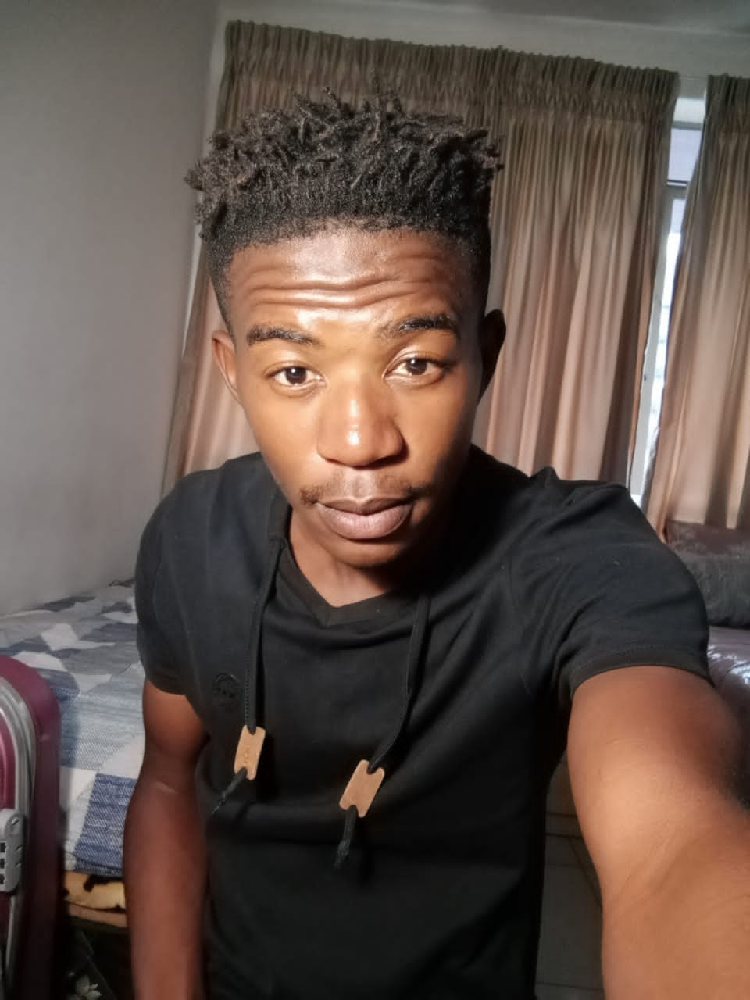

Taelo Seholoba
About Me
My name is Taelo Seholoba but friends call me Tyro I am turning 22 Years old on the 5th of December, I am a male and I'm located in Grasmere,I completed matric in 2017 at Sakhisizwe Secondary School then went to Sedibeng Tvet College in 2018 were I managed to attain a National Certificate of N4 in Mechanical Engineering. My interests are Producing Music, Documentaries, Movies, Reading Books and lately I've grown fond of coding. I currently don't have any work experience but I am a hard worker who has a vivid imagination and who is willing to learn.
SKILLS
I am currently skilled in Javascript, CSS and HTML
PORTFOLIO
I currently don't have any Portfolio
